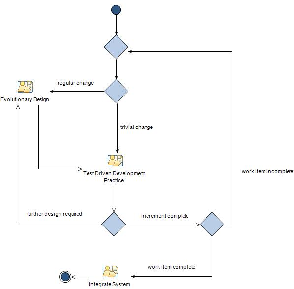

The Test Driven Development practice describes how to use TDD to create a high quality version of the implementation.
It should be used in conjunction with other practices or process elements to deliver high quality software. This
example illustrates one possible way of utilizing the TDD practice in conjunction with other practices.
This diagram describes an evolutionary approach to developing the software by considering just a small part of the
system. A brief amount of time is spent considering the possible design, the code is implemented via the TDD practice,
and the design is reviewed and refactored until high quality software is achieved. The new part of the system is
then integrated with the rest of the system, and another small part of the system is selected for development.

|